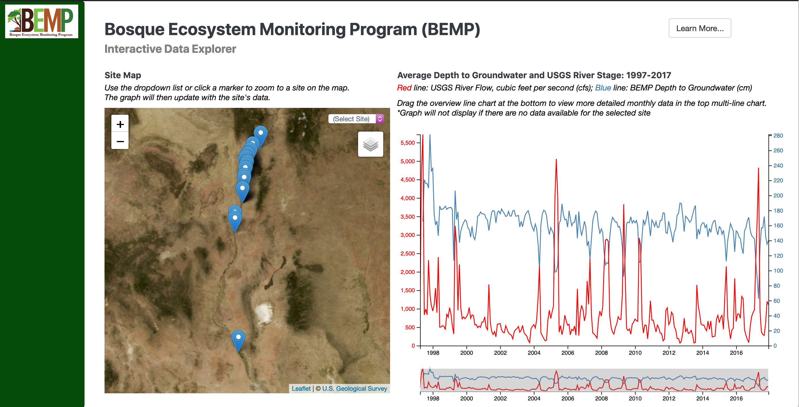

BEMP Groundwater Data Explorer

Visualizing and mapping long-term ecological data for public outreach and education
In spring 2021, as part of Liping Yang's Web Mapping class, I collaborated with fellow student Blair Mirka to develop a web application to explore groundwater data collected by the Bosque Ecosystem Monitoring Program (BEMP), a local citizen science organization focused on long-term ecological monitoring along the Rio Grande. We worked with BEMP to create a web application that would serve a variety of needs for funders, students, and researchers by visualizing and mapping their most-requested dataset, depth to groundwater.